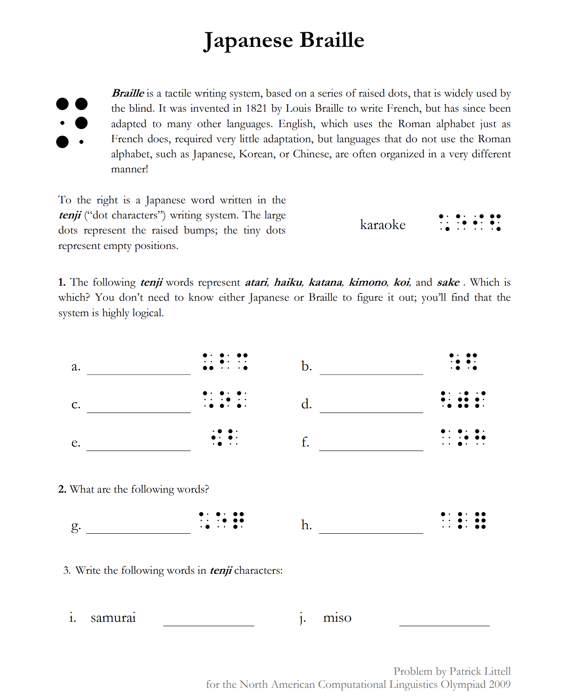
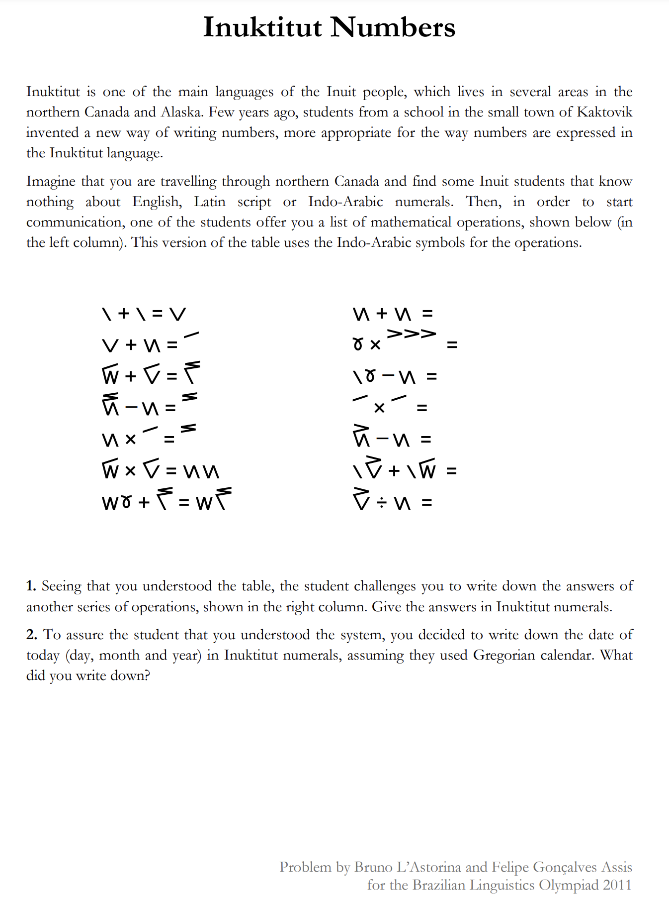

Linguistics - A test to measure AI intelligence
Posted on 2024-12-25
State of the art AI models have been coming out every week for the past month (O1, Gemini 2 flash thinking, O3), with each one being more intelligent than the last and achieving all time high accuracies on benchmarks. O3 in particular has been impressive, with its score on ARC-AGI being touted as a reason for it being an early form of AGI. I personally think ARC is hard not because of reasoning, but because a 2D image grid is hard for LLMs to visualize(recent analysis also indicates the same [1])
Given all the hype, I decided to form my own intelligence test for a model. Coming up with an 'intelligence test' question is tricky because of memorization - LLMs are incredibly good at remembering things they've seen before (a single backward pass is often enough to memorize a large chunk of text[2]). This means I can't use any challenges that exist on the internet (and that I probably cant reuse any questions I share here either). It's also important to separate knowledge from intelligence in the question - intelligence is the meta ability to learn new things, while knowledge is a test of its existing understanding.
Therefore, any 'AI Intelligence test' question should have the following characteristics:
- Low occurence in the training distribution: The new skill being tested should not be prevelant on the internet. For example, Google measures Gemini's ability to translate to and from Kalamang[3], a language with less than 200 speakers, in order to counter this.
- Large, un-memorizable answer space: One of the reasons AlphaGo is so significant is because Go has an extremely large search space, and it is impossible to win by memorizing the optimal move for every board position.
- Should be completely solvable from the question: As Francis Choilet puts it, intelligence is the skill through which you acquire new skills. Therefore, the test should demonstrate a new skill, and examine a model's ability to use that new skill
Based on the above criterion, I think linguistics Olympiad questions
[4] are a great litmus test for model intelligence.
- The questions are usually about esoteric languages (such as Japanese braille), which models are unlikely to have seen in large quantities during training.
- They are logical deduction problems, where the problem is entirely solvable using the examples provided in the question, with no prior understanding of languages needed.
- Languages generally have a large number of symbols that can be combined in many ways, and so the search space for a possible answer is likely to be large.
Linguistics is also a beautiful evaluation method because its based on the very things LLMs are supposed to be experts on - language. So lets see how they perform on them!
Intelligence Test 1: Japenese Braille
This is a problem of 'easy' difficulty in the ILO. Here's the question:

This one's pretty fun to solve
The problem's actually fairly fun to solve, and I encourage you to try solving it. I modifed the problem above to reduce the impact of memorization - removing any mention of Japenese Braille, and converting the braille images into a series of binary digits (with 1s representing large dots and 0s representing small ones). Here's how the top models did on it:
| Model Name |
Performance |
| GPT4O |
4/6 in first part, 0 in the rest |
| O1 |
Gets all 4 parts correct! Interestingly, it guesses the 2nd part (memorization advantage?), but then figures out the rule system in the 3rd part. |
| Gemini2-Flash-Thinking-Experimental |
3/6 first part, 0 in the rest |
| Claude-35-Sonnet |
1/6 in the first part, 1/2 in the second part by guessing (memorization?), 0 in the rest |
O1 is seriously impressive! It nailed the problem in under 2 minutes, while others struggled with it (I might be ashamed to say it took me a lot more than 2 minutes). But let's see if it can handle a tougher question
Inuktitut Numbers
This one's marked a 'medium' in difficulty, but I honestly thought it was pretty easy.

As usual, I removed any mention of Inuktitut to prevent memorization, and I converted the symbols into an easy form for the LLMs to digest - using slashes ('/','\') and apostrophes to write the above equations. Here's how the LLMs performed
| Model Name |
Performance |
| GPT4O |
0 |
| O1 |
Gets 2 parts out of 6. It got some parts right (what the slashes represent, the value for 0), but others wrong - the base the system operates in (base 20), the value for the apostrophes |
| Gemini2-Flash-Thinking-Experimental |
0 |
| Claude-35-Sonnet |
0 |
Well, it looks like we have our new AGI test question! O1 gives it a fair shot but falls short of making any real progress on the problem. The other models dont even grasp how to start it.
Conclusion
Linguistics Olympiad questions are a great intelligence measure for LLMs because they introduce new rules and test an LLM's ability to understand and apply them. Even though they're based in language, LLMs can't use prior knowledge because the languages have negligible presence in training data. There's a large bank of such questions and new ones are created every year for the Olympiad, and so we should have a fairly large set of questions to test LLMs on. And the questions we tried today are still pretty (they're nothing close to what gets asked in the Olympiad) - so it'll be interesting to see how O3/O1 pro/future models perform on these.